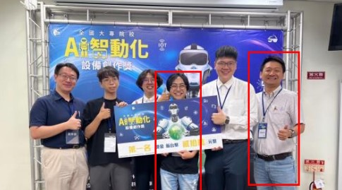
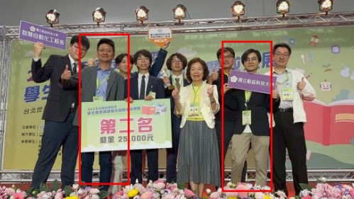
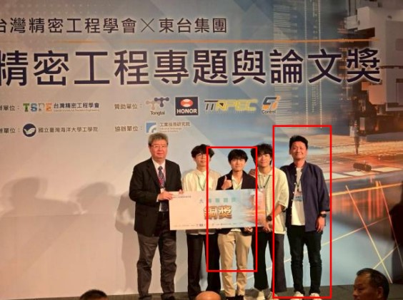
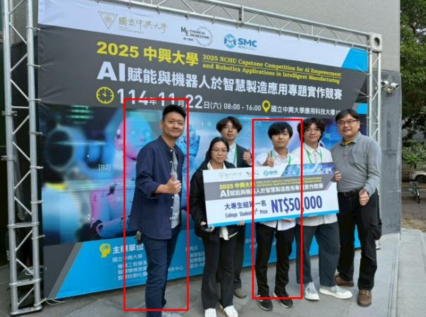
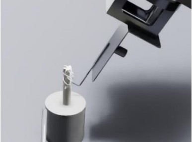
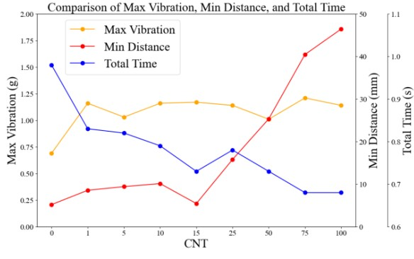
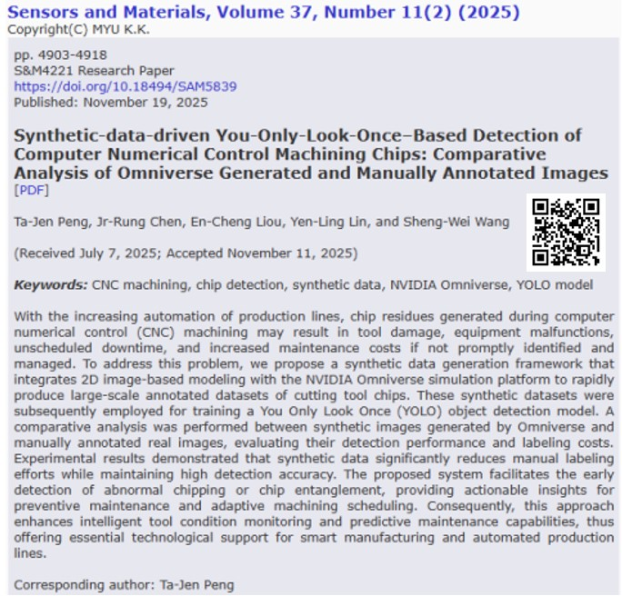
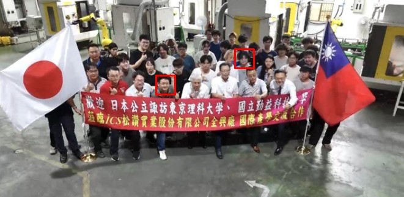

本頁整理我在智慧製造、自動化產線、AI 視覺辨識、CNC 系統整合與研究發表方面的成果， 包含全國競賽得獎、期刊與雜誌刊登，以及參與產學合作計畫的實作經驗。
返回首頁競賽成果與專題實作表現

作品名稱：千噸鍛造震四海，蟻群智導行天下
結合貝葉斯最佳化與螞蟻群演算法，建立智慧化潤滑噴塗路徑規劃系統， 可自動生成最佳路徑並即時調整參數。
在高溫高速鍛造條件下，能耗降低約 21.5%， 材料使用率提升約 27.4%。

作品名稱：貝葉斯優化於蟻群演算法應用於自動化鍛造噴塗路徑規劃中
透過智慧化噴塗路徑生成與控制參數最佳化，有效提升製程穩定性與表面品質， 並展現智慧製造之實務應用成果。

作品名稱：亮面工件隨機夾取：基於增強式合成資料與深度學習點雲補全
研究聚焦於亮面工件辨識、點雲補全與隨機夾取技術， 提升視覺辨識與自動抓取系統之穩定性與精度。

作品名稱：運用 Nvidia Omniverse 與點雲資料補全之亮面套筒隨機取放系統
結合 NVIDIA Omniverse、YOLO-seg、3D 反投影與 PCN 重建， 有效改善反光造成的點雲缺失。
模型精度提升約 9–10%、3D 分割 IoU 提升約 11%，背景雜訊降低 72%。
研究成果、技術文章與投稿紀錄

刊登於《機械工業雜誌》第 506 期（2025 年 5 月）
以 NVIDIA Omniverse 建立 CNC 加工纏屑之數位雙生環境， 結合強化學習與 YOLO 辨識模型，辨識準確率超過 90%， 有效降低停機頻率並提升刀具壽命與加工品質。

Journal of Chinese Society of Mechanical Engineers（2025 accepted）
結合 B-Spline 軌跡規劃與 L-BFGS-B 最佳化， 將平均定位誤差由 27.68 mm 降至 7.52 mm， 並縮短執行時間約 12%。

Sensors and Materials, Vol. 37, No. 11 (2025)
利用 Omniverse 自動生成並標註切屑影像，以合成資料訓練 YOLO 模型， 提升辨識穩定性與準確度，並獲選為當期期刊封面。
研究實作、系統整合與智慧製造應用

與松讚實業股份有限公司、日本諏訪東京理科大學合作， 將機械手臂自動上下料、夾具設計與通訊整合導入企業產線。